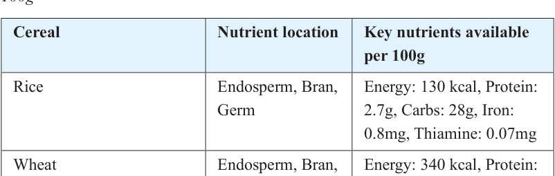

21


Food and Human Nutrition

Form Two
Maize
Maize grains are typically large compared to other grains like rice, millet and sorghum. The grains are generally oval to round, featuring a flattened inner side. The exact shape may vary depending on the maize variety and kernel type. The colour of the kernels can range from yellow, white, red and purple. Maize, also known as corn, is a good source of energy in the form of starch. Yellow corn is a good source of carotene, which the body can convert to vitamin A upon consumption. However, niacin in maize is mostly found in a bound form, making it less readily absorbed by the body. Maize is widely cultivated due to its adaptability to different environments, high yield potential, and multiple uses. Table 2.1 shows type of cereals nutrient location, and key nutrient present in cereals per 100g.
Table 2.1: Type of cereals, nutrient location, and nutrient present in cereals per
100g

Cereal
Nutrient location
Key nutrients available
per 100g
Rice
Endosperm, Bran,
Germ
Energy: 130 kcal, Protein:
2.7g, Carbs: 28g, Iron:
0.8mg, Thiamine: 0.07mg
Wheat
Endosperm, Bran,
Germ
Energy: 340 kcal, Protein:
13g, Carbs: 72g, Iron:
3.9mg, Niacin: 5mg
Finger millet
Endosperm, Bran,
Germ
Energy: 320 kcal,
Protein: 7.3g, Carbs: 72g,
Calcium: 344mg, Iron:
3.9mg
Maize
Endosperm, Bran,
Germ
Energy: 365 kcal, Protein:
9.4g, Carbs: 74g, Vitamin
A: 214 IU, Iron: 2.7mg
Sorghum
Endosperm, Bran,
Germ
Energy: 329 kcal, Protein:
11g, Carbs: 72g, Iron:
4.4mg, Niacin: 2.8mg
17/09/2025 16:30